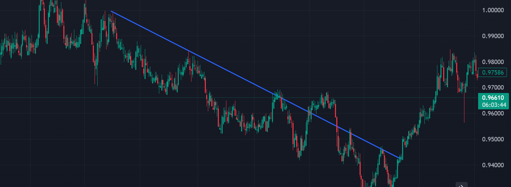

Basic Chart Reading
Understanding how to read and interpret charts is essential for forex traders, as it allows them to analyze price movements and make informed trading decisions. Chart reading involves examining historical price data to identify patterns, trends, and potential future price movements. This skill is fundamental for both technical and fundamental analysis, and it forms the basis of most trading strategies.
Types of Charts
Line Charts:
A line chart is the simplest type of chart, plotting a line that connects the closing prices over a specified period. It provides a clear view of the general direction of the market but lacks detailed information.

Bar Charts :
A bar chart displays the open, high, low, and close prices for each period. Each bar represents a single time period, with the top of the bar indicating the highest price and the bottom indicating the lowest price. Horizontal lines on the left and right sides of the bar represent the opening and closing prices, respectively.

Candlestick Charts:
Candlestick charts are the most popular type of chart among traders due to their detailed information and visual appeal. Each candlestick represents a single time period, showing the open , high, low, and close prices. The body of the candlestick is filled or hollow, indicating whether the price closed higher or lower than it opened.

Key Components of a Candlestick:
Candlestick charts are composed of individual candles, each representing a specific time period. Understanding the structure of a candlestick is crucial for interpreting price action.
Body:
The body represents the range between the opening and closing prices. A filled (or red) body indicates a bearish candle (price closed lower than it opened). A hollow (or green) body indicates a bullish candle (price closed higher than it opened).
Wicks (or Shadows):
The wicks, also known as shadows, are the thin lines above and below the body. The upper wick represents the highest price during the period. The lower wick represents the lowest price during the period.
Open and Close:
The open price is where the price started at the beginning of the period. The close price is where the price ended at the end of the period.

Identifying Trends:
One of the primary goals of chart reading is to identify trends. Trends can be classified into three main types: uptrends, downtrends, and sideways trends.
Uptrend:
An uptrend is characterized by a series of higher highs and higher lows. It indicates a bullish market where prices are generally rising.
Downtrend:
A downtrend is characterized by a series of lower highs and lower lows. It indicates a bearish market where prices are generally falling.
Sideways Trend:
A sideways trend, or range-bound market, occurs when prices move within a horizontal range. It indicates a period of consolidation where supply and demand are balanced.

Conclusion:
Basic chart reading is a foundational skill for forex traders. By understanding the different types of charts, key components of candlesticks, trends, support and resistance levels, and common chart patterns, traders can gain valuable insights into market behavior. This knowledge enables traders to make informed decisions and develop effective trading strategies.